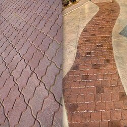

-
Houston Concrete Supplier: Stamped Concrete vs. Pavers
Posted on January 20, 2021 by Phoebee Johnson

Your Houston concrete supplier can help you create the patio of your dreams.
If you have a driveway, patio, porch, or other surface in mind for your home, consider working with your Houston concrete supplier for your needs. Many homeowners have a hard time deciding between pavers and stamped concrete. However, concrete offers many advantages over pavers and natural stone. For example, stamped concrete is more cost-effective and low maintenance while providing design versatility.
Stamped Concrete from Your Houston Concrete Supplier is Less Expensive than Pavers
One of the main reasons many homeowners choose stamped concrete from their Houston concrete supplier is that it is economical. Concrete is often significantly less expensive compared to stone, brick, and pavers. Even the low end of paver installation for a patio costs on average $10 to $17 per square foot. By contrast, stamped concrete is generally much lower in cost. This is because concrete, as a material, is often much less expensive than pavers.
In addition, stamped concrete from your Houston concrete supply takes less time to install. This means that labor costs for installation are often much lower for stamped concrete compared to pavers as well. Therefore, if you’re looking for a budget-friendly option for your home, stamped concrete can help you save money for your project.
Stamped Concrete is Low Maintenance
Another great benefit of choosing stamped concrete from your Houston concrete supplier is that it’s low maintenance. Generally, all you need to do for your concrete is clean and reseal it every few years. Stamped concrete can last decades without spending a lot of time and money for maintenance. Because it is one continuous surface, stamped concrete is practically weed-proof, as there are no spaces for weeds to grow through.
By contrast, pavers require more work to maintain. Just like concrete, you must wash pavers regluarly. However, you cannot use power washers because it can rinse away the sand in between the individual pieces. You will also need to refill this sand often in an effort to help reduce weeds. However, even with the sand, weeds can still poke through the joints, which means you may need to spend time pulling weeds from your patio. Therefore, if you want a low maintenance option for your home, talk to your Houston concrete supplier about stamped concrete.
Decorative Stamped Concrete from Your Houston Concrete Supplier
Now, you may be wondering if stamped concrete can offer the look you want. Your Houston concrete supply can create almost any pattern or color to match your aesthetic. For example, if you like the look of brick or stone, stamped concrete can help replicate these materials without the expense and hassle of using them for your outdoor surfaces. Additionally, you can stain or color concrete to almost any color, so the design options are practically limitless. Therefore, talk to your Houston concrete supplier about different options for your home.
At TEXAN Concrete Ready Mix Enterprise, we offer custom Houston cement mixing and pouring for your residential and commercial concrete projects. Our team formulates your mixture based on your specific needs in our state-of-the-art facility, so you know you will have strong, durable concrete you can depend on. Call us today at (713) 227-1122 to learn more and request a quote for your upcoming project!
This entry was posted in Concrete, Concrete Contractor, Ready Mix Concrete. Bookmark the permalink.